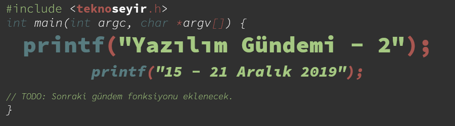
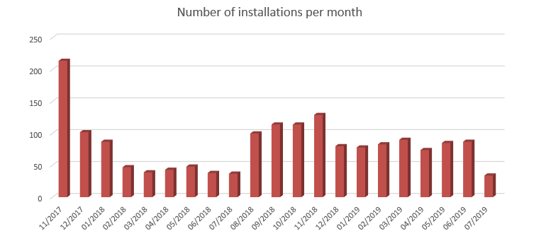
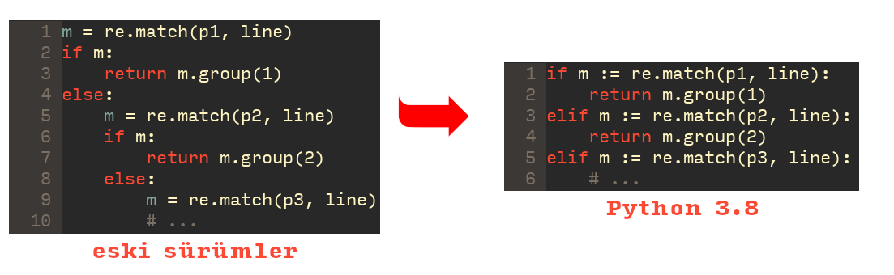
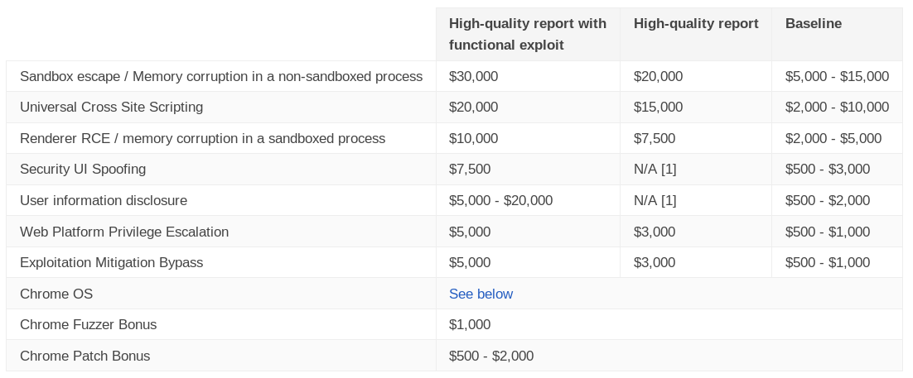

Yazılım Gündemi - 2
15-21 Temmuz 2019
İçindekiler
- 1. GNU/Linux sunucuları hedef alan 3 zararlı Python kütüphanesi PyPI üzerinden silindi
- 2. Python 3.8 ile gelecek olan yeni özellikler belli oldu
- 3. C++20 için komite taslağı hazırlanmış
- 4. Go geliştiricileri, dilin içerisine hata kontrol fonksiyonu ekleme isteğini reddetti
- 5. MSRC organizasyonu güvenli programlama dillerini keşfetmeye Rust ile başladı
- 6. ABD Finansal Hizmetler Komitesi'nde Rust konuşuldu
- 7. JDK 13 sürümü "Rampdown" ikinci aşamaya geçti
- 8. Google, açık bulanlara verilen ödül miktarlarını arttırdı
- 9. Diğer Haberler
- 10. Lisans

< Önceki Gündem | 15-21 Temmuz 2019 | Sonraki Gündem >
1 GNU/Linux sunucuları hedef alan 3 zararlı Python kütüphanesi PyPI üzerinden silindi
ReversingLabs isimli güvenlik firması, PyPI (Python Package Index) üzerinde neredeyse 20 aydır (Kasım 2017'den beri) bulunan ve sadece GNU/Linux sistemlere kurulduğunda aktif olan zararlı kod parçaları içeren 3 kütüphaneyi tespit etti. ruri12 kullanıcı adı altında yayınlanmış bu üç kütüphanenin isimleri şunlar: libpeshnx, libpesh ve libari. Üzerinde çalıştığınız ya da bağımlılık olarak projenize eklediğiniz kütüphanelerde bu paket isimleri var mı diye bakmanız iyi olacaktır.

Şekil 2: Zararlı kütüphanenin aylara göre indirilme sayıları
Kullanıcı tarafından çalıştırılınca sisteme uzaktan komut göndermeye olanak
sağlayan bu arka kapı sadece libpeshnx isimli kütüphanede olsa da, diğer 2
kütüphanenin de zararlı kod parçaları içerdiği tespit edilmiş.
Güvenlik firmasının uyarısı üzerine bu 3 pakette PyPI sistemi üzerinden silinmişler. İncelemek için kaynak kodlarını bulmaya çalıştım fakat bulamadım. Geçtiğimiz hafta da buna benzer "kütüphanede arka kapı bulundu" haberi vardı, görünen o ki bu tarz haberler çıkmaya devam edecek ve artık umarım geliştirici camiası olarak bazı şeyleri sorgulamaya başlamamıza vesile olacak.
2 Python 3.8 ile gelecek olan yeni özellikler belli oldu
Python 3.8.0 Beta 1 sürümü 4 Haziran'da yayınlanmıştı. Beta 2 sürümü de 4 Temmuz'da yayınlandı. Plan dokümanında belirttiklerine göre Beta 1'den sonra yeni özellik (feature) eklenmeyecek, hata gidermeleri ve iyileştirmelere odaklanılacak. Önümüzdeki aylarda da Beta süreci devam edecek ve ardından ilk Release Candidate sürümünün 30 Eylül'de, final sürümünün ise 21 Ekim'de duyurulması bekleniyor. İlgimi çeken özellikleri inceledim, diğerlerini de siz inceleyebilirsiniz.
2.1 ':=' Walrus Operatörü (PEP572 - Assignment Expressions)

Şekil 3: Python 3.8 ile birlikte gelecek olan walrus operatorü
Yukarıdaki örnekte de görüldüğü gibi, bu yeni operator sayesinde, önceden
if sorgusunda kullanacağımız değişkeni tanımlamamız gerekirken artık direkt
if sorgusu içerisinde tanımlayıp, if'in içerisinde kullanabileceğiz. Benim
de zaman zaman eksikliğini hissettiğim bir özellikti, gelmesine sevindim.
2.2 Sadece pozisyonel parametreler (PEP 570 - Positional-Only Parameters)
Python'da bir fonksiyona parametre gönderirken ille de sırayla göndermek
zorunda değiliz. Mesela def merhaba(isim, mesaj) diye bir fonksiyon varsa
bu şekilde de parametre gönderebiliyoruz: merhaba(mesaj=deneme, isim=eren).
Fakat artık eğer istenirse sadece pozisyonel parametreler de
tanımlanabilecek. Çok sık Python yazmadığım için tam olarak hangi sorunu
çözüyor bilemiyorum ama eklendiğine göre ihtiyaç vardı demekki. Detaylı bilgi
için mutlaka PEP sayfasına bakın. Özellikle "How To Teach This" başlığı
altındaki kısıma bakmanızı tavsiye ederim. Sadece özelliği geliştirip
bırakmamışlar, aynı zamanda bunun insanlara nasıl öğretileceğini de
açıklamışlar.
Diğer yenilikler için bu PEP sayfasını ziyaret edebilirsiniz.
3 C++20 için komite taslağı hazırlanmış
Bildiğiniz gibi C++ programlama dilinin her 3 yılda bir yeni sürümü çıkıyor. Önümüzdeki yıl çıkacak olan C++20 için de ISO C++ Komitesi toplanmış ve yeni eklenecek olan özelliklere karar vermişler. C++ diline hiç hakim olmadığım için yeni eklenecek özellileri de pek inceleyemedim fakat bağlantısını verdiğin reddit gönderisinde liste halinde yeni özellikleri ve diğer bilgileri bulabilirsiniz. C++20'nin 2020 ilkbaharında yayınlanması bekleniyor.
3.1 std::format ile metin biçimlendirme
Diğer birçok programlama dilinde de karşılaştığımız string içerisinde değişken kullanmaya olanak sağlayan özellik C++20'de geliyor. Örnek vermek gerekirse:
Eskiden bu şekilde yazdığımız satır:
cout << "Merhaba, " << kullanici_adi << ".\n"; cout << "Toplam " << okunmamis_mesaj_sayisi << " adet okunmamış mesajınız var!\n";
Artık bu şekilde sadeleşecek:
std::format("Merhaba, {}.\n", kullanici_adi); std::format("Toplam {} adet okunmamış mesajınız var!\n", okunmamis_mesaj_sayisi);
4 Go geliştiricileri, dilin içerisine hata kontrol fonksiyonu ekleme isteğini reddetti
5 Haziran'dan beri Github üzerinde tartışılan bu konu, 17 Temmuz'da issue
sayfasını açan takım üyesinin yazdığı yorum ile reddedildiği duyuruldu. Diğer
programlama dillerinde try {} catch () {} gibi söz dizimleri ile sıkça
gördüğümüz özellik Go dilinde henüz mevcut değil. Şu an şöyle bir yapı
kullanılıyor:
f, err := os.Open(filename) if err != nil { return …, err }
Bu kullanımdaki sorun 2018'de Russ Cox tarafından detaylıca raporlanmıştı.
Özetlemek gerekirse, yukarıdaki kullanım kod karmaşıklığını arttırdığı gibi
kodun temiz görünmesinin de önüne geçiyor, iddiası var. Raporda taslak olarak
bir çözüm önerilmiş fakat sonuç olarak 2019 Haziran'da try fonksiyonu tasarı
olarak yazılmış ve bugün konuşulan bu halini almış:
f := try(os.Open(filename))
Görüldüğü gibi yukarıdaki yapıdan daha sade ve temiz bir hata yakalama olanağı sunuyor. Burada şunu belirtmekte fayda var: Dile yeni bir anahtar kelime (keyword) eklenmeyecek, yeni bir fonksiyon olarak eklenecek bu özellik. Github'daki tartışma çok uzun, yüzlerce yorum yazılmış hepsini okuyamadım fakat issue yazarının hazırladığı tartışma özetlerini(1 2) okudum, tüm tartışmayı okuyamadığım ve dile de pek hakim olmadığım için yorum yapamayacağım fakat sonuç olarak bu istek reddedilmiş. Anladığım kadarıyla pek sağlıklı bir tartışma ortamı da kurulamamış gözüküyor.
5 MSRC organizasyonu güvenli programlama dillerini keşfetmeye Rust ile başladı
Microsoft Security Response Centre organizasyonu, bloglarında bu hafta yayınladıkları blog yazısı ile birlikte yeni bir yazı serisine başladıklarını duyurdu. Bu yazı serisinin amacı güvenli programlama dillerini keşfetmek ve incelemek olacakmış. Mozilla tarafından geliştirilen, son zamanlarda özellikle bellek-korumalı (memory-safe) yapısı nedeniyle popülaritesi artan Rust programlama dilini de bu yazı serisi için başlangıç olarak seçmişler. Çalışmalarını takip etmeye çalışacağım.
6 ABD Finansal Hizmetler Komitesi'nde Rust konuşuldu
Komitenin toplanma nedenini tam olarak bilmiyorum fakat Facebook'un geliştirdiği kripto para Libra hakkında olduğu açıkça belli. Komite üyesi, Facebook'dan yetkili olduğunu düşündüğüm kişiye "GitHub deponuza baktım projenin büyük bir bölümü Rust dilini kullanıyor. Rust neden seçildi? Rust dilinin güvenlik sorunları için yeterli olduğuna inanıyor musunuz?" şeklinde bir soru sordu. Facebook yetkilisinin verdiği cevaptan sonra komite üyesi, bu sefer de "Libra, Rust dilinin Nightly Build (stabil olmayan) sürümünü kullanıyor. Nightly Build sürümde tam olarak hangi özelliklere ihtiyacınız var ve neden stabil sürümleri kullanmıyorsunuz?" şeklinde bir soru soruyor. Bir bürokratın bu konulara bu kadar hakim olması beni şaşırttı. Bizdeki "bulut bilişim" vakası akıllara gelince insan imreniyor tabi…
7 JDK 13 sürümü "Rampdown" ikinci aşamaya geçti
OpenJDK takımı 13 sürümü için yeni özellik (feature) seti kabul etmeyi durdurdu. Bu aşamadan sonra yeni özellik eklemek yerine raporlanan hataları gidermeye odaklanacaklarmış. Planladıkları takvimine göre ilk RC (Release Candidate) sürümü 8 Ağustos, final RC sürümü ise 22 Ağustos tarihinde yayınlanacak gibi gözüküyor. Sürümün genel kullanılabilirlik durumuna gelmesi de 17 Eylül tarihini bulacak.
8 Google, açık bulanlara verilen ödül miktarlarını arttırdı
Yeni ödül tablosu bu şekilde:

Şekil 4: Tablo kaynağı: https://www.google.com/about/appsecurity/chrome-rewards/index.html#rewards
Hadi bakalım klavyeler çalışsın! :)
9 Diğer Haberler
- Yazılım üzerine yeni bir türkçe podcast serisi başladı: kodpod.
- NIST, Amerika'da Yapay Zeka Standartları belirlemeye çalışıyor. Taslak Metin
- TypeScript 3.6 Beta duyuruldu
- Nim programlama dilinin 0.20.2 sürümü yayınlandı.
- Google, Chrome içersinden XSS Auditor aracını kaldırıyor.
- Küçük boyutuyla öne çıkan Go derleyicisinin 0.7.0 sürümü duyuruldu.
- Volta JavaScript Launcher v0.5.7 sürümü duyuruldu.
- JavaScript ve TypeScript'de GraphQL için otomatik tamamlama özelliği sunan araç açık kaynak olarak yayınlandı: graphql-zeus.
- Birden fazla veritabanını tek bir SQL sorgusunda kullanmaya olanak sağlayan araç açık kaynak olarak yayınlandı: octosql
- YugaByte DB ürünü açık kaynak oldu. GitHub Deposu
- Zstandard 1.4.1 sürümü duyuruldu.
- Dağıtık işlemsel anahtar-değer (key-value) veritabanı TiKV 3.0 sürümü duyuruldu. GitHub Deposu
- Dağıtık yapay zeka projeleri için TensorFlow kütüphanesi yayınlandı: ashpy.
- Microservisler için komut satırı aracı monday 0.0.9 sürümü duyuruldu.
- Rust uygulamaları için güvenlik odaklı uygulama framework sisteminin v0.2.0 sürümü yayınlandı: abscissa. GitHub Deposu
- Veritabanı yönetim aracı ElectroCRUD 2.2.0 beta sürümü duyuruldu.
- Akademik yayınlar:
10 Lisans

Yazılım Gündemi - 2 yazısı Eren Hatırnaz tarafından Creative Commons Atıf-GayriTicari-AynıLisanslaPaylaş 4.0 Uluslararası Lisansı (CC BY-NC-SA 4.0) ile lisanslanmıştır.